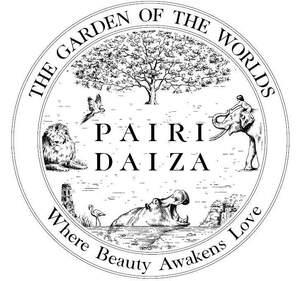

Trade Mark Journal No.2026/010 6 March 2026
UK00004335870 5 February 2026 (3,25,28,31,35,39,41,42,43,44)

International priority date claimed: 3 February 2026
(European Union Intellectual Property Office (EUIPO))
(019312175)
- Class 3
- Soap; perfumery; essential oils for cosmetic use; essentials oils for fragrancing; cosmetics; hair lotions. .
- Class 25
- Clothing, footwear, headgear.
- Class 28
- Games and playthings; gymnastic and sporting articles not included in other classes; Christmas tree ornaments.
- Class 31
- Agricultural, horticultural and forestry products and grains not included in other classes; live animals; fresh fruits and vegetables; seeds, natural plants and flowers; foodstuffs for animals, malt.
- Class 35
- Advertising; Business management; Help in the management of business affairs; Business management consulting; Business management and organization consultancy; Business administration; Office functions; Organisation of exhibitions and events for commercial or advertising purposes; retail services connected with the sale of souvenirs, namely T-shirts, sweatshirts, caps (headgear), scarves, key rings, magnets, badges, ball-point pens, pencils, rulers, notepads, photograph albums, calendars, stickers, coin purses, pocket wallets, bags, ashtrays, snow globes, spoons, cups, glasses, mugs, scale models namely of animals, books in the form of paper books and of electronic books, CD-ROMs, DVDs, games and playthings, and soft toys; retail services connected with the sale of souvenirs, namely decorative articles, namely boxes, paintings, photographs, lithographs, animal statuettes, lamps, candles, candle holders, candle jars, table plates, floor tiles, picture frames, mirrors, trays, book rests (furniture), vases, furniture, foodstuffs and confectionery; Public relations services; Management and promotion of amusement parks, animal parks and marine and soft water aquarium infrastructure; retail services connected with the sale of beers, mineral and aerated waters and other non-alcoholic beverages, fruit beverages and fruit juices, syrups and other preparations for making beverages.
- Class 39
- Organization of travel and sightseeing.
- Class 41
- Education; Providing of training; Workshops (Arranging and conducting of -) [training]; Amusement parks, animal parks and marine and soft water aquarium infrastructure; Animal training, botanical gardens, zoological gardens; Publication of books and newspapers; Videotape editing; Exhibitions (organization of -) for cultural or educational purposes; Photography; Arranging and conducting of parties (entertainment), conferences and seminars; Organization of exhibitions for cultural or educational purposes; Arranging and conducting of colloquiums, conferences, congresses, seminars, showings, meetings and training sessions, and organisation of competitions in the fields of education, entertainment and sustainable development, for cultural or educational purposes; Organisation of events for cultural or educational purposes; Publication of printed works by specialists and other publications relating to fauna and flora; Education and entertainment in the field of flora and fauna, organisation of training sessions in the field of flora and fauna; Providing museum facilities. .
- Class 42
- Scientific and technological research as well as research and design services relating thereto; analytical services and industrial research; consultation on the environment. .
- Class 43
- Catering services (food); bar services; restaurants; catering services; temporary accommodation; hotel services; boarding for animals. .
- Class 44
- Veterinary services; Hygiene and beauty care for human beings or animals; Agricultural, Horticultural and forestry services; livestock farming; Consultation on animal husbandry.
PAIRI DAIZA société anonyme
Representative: Baron Warren Redfern LLP